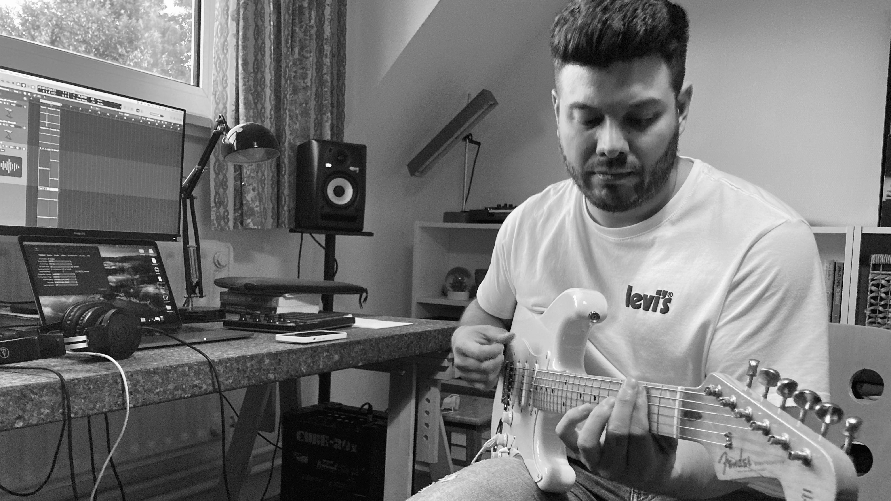
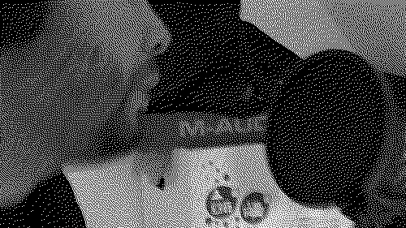
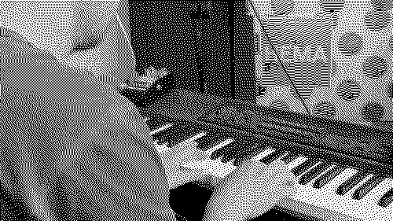
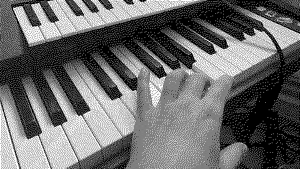
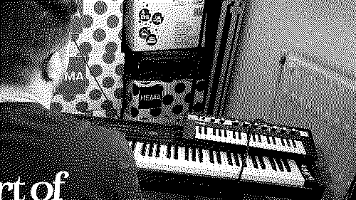
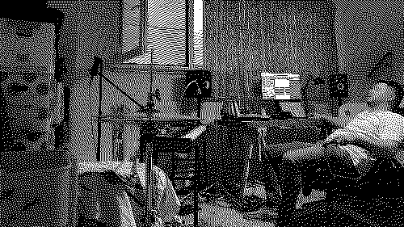
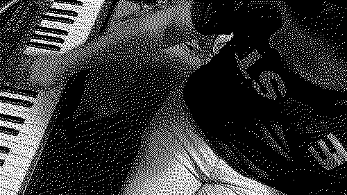
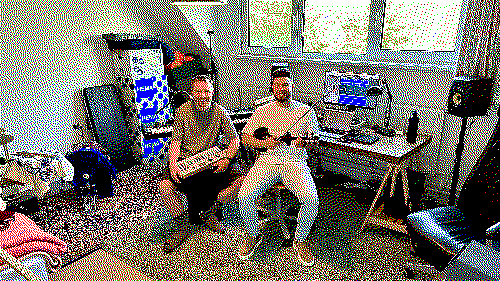
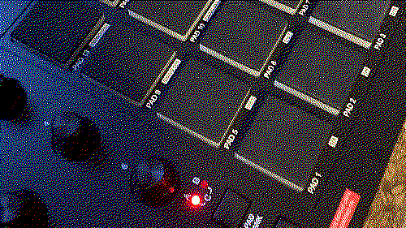
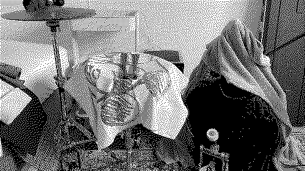

August 9, 2023
We had an awesome time in our session yesterday. We started with a great idea that was already thought out during the week. This really gets us going!
It's tough to come up with a good idea when we try to do it together. The first step towards a good song is usually something each of us does alone.
Towards the end of our session, we finished the beat we had started last week. We made it better by adding an additional layer of whistling, and we did the final touches to the song to make it sound just right.
Overall, this was a productive and enjoyable evening where we worked well together!
August 2, 2023
After a one-week holiday break, we had a new session on tuesday. We decided to start fresh and forgot about the beat we had worked on last week. Learning from the Fundamentals of Neo Soul course, we realized that our previous approach was too complicated.
Instead, we focused on using only a minor 9 chord for the progression, which resulted in a lush and cool sound. Once we had the beat and the progression in place, we added a bassline, some whistling, and a piano solo.
July 19, 2023
Last night's session was quite challenging. I had put together an "ok" chord progression, and we managed to record a smooth and groovy bassline that complemented the chords nicely.
But despite our initial excitement, we eventually realized that the last chord in the progression didn't resolve as smoothly as we had hoped, causing a disruption in the overall flow of the beat.
While each chord in isolation sounds pleasing, we understood that a smooth resolution between them is pivotal in creating a cohesive loop.
It's evident that we need to refine our understanding of chord progressions and their seamless connection to enhance our compositions.
After some discussion and research, we decided to invest in the "Fundamentals of Neo Soul" course offered by Gospel Musicians.
We are hopeful that by enrolling in this course, we will gain valuable insights and techniques to create better progressions.
At the moment, we're not sure what to do with this beat.
July 12, 2023
Tonight's session was absolutely amazing. Even though we started a bit slow, we quickly found our flow and made some great progress.
At the beginning, we weren't sure whether we should re-record the idea from our last session. But after a few tries, we realized it wasn't necessary. Instead, we decided to make some small MIDI changes to the drums. This saved us time and helped us move forward.
Once we had the basic structure down, we added a catchy melody to the song. This melody acts as the glue that brings all the different parts together. After finishing the melody, we focused on creating a simple arrangement for the track. We dropped it into our mastering template, and voila, track finished!
To wrap up the session, we listened to some awesome songs:
Earth, Wind & Fire - BeijoBruno Mars, Anderson Paak, Thundercat - After Last Night
Quincy Jones, Take 6 - Moody's Mood For Love
Javier Santiago, Elena Pinderhughes - Trance
Kiefer, Braxton Cook - U Already Know
July 4, 2023
In this week's recording session, we initially found ourselves unsure of where to start. Since we didn't have a clear progression to begin with, we had to improvise.
To seek inspiration, we decided to listen to some music and stumbled upon Wun Two's "Snowball Cookies". We used this track as our inspiration during the recording session. By doing this, we've put Austin Kleon's advice into practice: "Steal Like An Artist".
"The only art I'll ever study is stuff that I can steal from." - David Bowie
June 28, 2023
We must admit, it was a rather unproductive evening, but hey, that happens sometimes, right?
To set the mood, we listened to some good music. Snarky Puppy filled the room, and in the process, we stumbled upon an artist named Reuben James. Exciting stuff!
With our ears tuned in, we tried to find a little top melody to add to the song. After exploring some options, we stumbled upon a nice arpeggio. However, despite our best efforts, we struggled to capture a recording that satisfied us. In the end, we decided to abandon the idea of a top melody altogether.
Despite this setback, we turned our attention to crafting an outro for the song. Fortunately we stumbled upon a previously unused recording tucked away in the depths of the file. We realized it could serve as the perfect outro. What makes it particularly interesting is that it was played as if it belonged to a beat, even though the outro itself lacks a beat. This unexpected contrast adds an interesting dimension to the song.
Today's lesson was a valuable one: never delete recordings. You never know when they might find their place in a later stage of the song-making process.
June 22, 2023
Today, we reconvened after a refreshing two-week break. We kicked things off by enjoying a nice meal together!
Although it took a moment to get fully comfortable with the music-making process again,
we started having a fun time jamming on the piano and percussion.
As it felt quite challenging,
we decided to listen to some songs we had saved during our time off:
Oli Howe - YUYU
Ian Ewing, Chris Mazuera - Someday
After trying multiple times, we managed to come up with a catchy hook. It took us almost the rest of the evening to record two good parts:
May 30, 2023
As we want to showcase our work's raw and authentic side, we started the session by taking a new profile picture. We think it better represents the chaotic beauty behind the scenes of our work.
As you may recall from our previous sessions, we are developing a simple Logic Pro template to speed up our recording process and ensure consistent sound quality. This week, we focused on evaluating the effects we use within the template.
We carefully examined the effects we usually apply to our tracks, asking ourselves questions like: Is this effect truly essential? What does it contribute to the overall sound? Is its placement in the right order?
We dedicated the final hour of our session to finishing the idea from last week. We built the structure of the song, and carefully mixed the volumes of each track to create a balanced landscape. Finally, we recorded a vinyl "crackle" from our SP404 to lay on top of the song.
We're very happy with the results of today's session as we finished the song (which is now ready for mastering).
May 23, 2023
During the past two sessions, we took the time to re-evaluate our creative process, as highlighted in our previous posts. Today, we rolled up our sleeves and got our hands dirty by recording a new beat.
Firstly, we introduced a new tool to our musical setup: a simple MIDI controller. With this device, we now have the capability to perform our drum beats in real-time. This will hopefully infuse our beats with the authentic feel we are looking for.
During the week, we studied the Jazz Piano Book and came across four interesting chords in a jazz standard called "Infant Eyes." Excited by our findings, we started a jam session to explore the chords and craft a percussion rhythm that complements the progression.
After a little break, we continued to enhance the recording by adding a simple sub-bass and a violin solo. The combination of these 2 layers together with the drums and the chords will be all there is in the song.
May 16, 2023

To kick things off, we began by revisiting our old recordings stored on the SP404 Sampler. While we discovered some great ideas, we realized that the recordings are way too noisy due to the broken recording interface we were using back then. Nevertheless, it sparked a discussion on how we could recreate that old, gritty ambiance.
Drawing inspiration from Mac Demarco's documentary, we learned that his approach is very hands-on. He records everything on on analog tape recorders like an old 4-track Tascam 244, avoiding immediate access to instant editing on a computer.
Although transitioning entirely to an analog recording setup is not feasible for us at the moment, we identified two actionable steps we can take right away:
- Hand-played Drums: We decided to ensure that our drums should always be performed manually. This approach will introduce an organic feel to our beats, even though they will still be available on the computer for editing purposes.
- Minimal Template on Logic Pro: In order to facilitate spontaneous recording, we created a minimal template on our Logic Pro DAW software. The template is designed to include only a limited number of effects, consistently applied, and tailored for instant recording.
We wanted to use our SP404 for manual drumming, but we discovered that a Mac iOS update caused a problem. The sample converter no longer recognizes the SD card, so we can't swap any samples anymore.
We made a conscious decision to keep the SP404 sampler in our setup. Instead of discarding it, we will employ it for a specific purpose: using it as an effect box. This will inject a touch of nostalgia and warmth to our sounds, hopefully enhancing the overall texture of our songs.
Looking ahead, we have some exciting plans for next week. Taka will be ordering the cheapest MPC Midi Controller on the market and uploading the first drum kit. Wim will be working on crafting a smooth chord progression.
May 10, 2023
This week has been really inspiring for both of us. We've been exploring different artists and styles, looking for new ways to expand our musical horizons. Here's a recap of our week:
Throughout the week, we listened to a variety of artists. One that stood out to us was Mac Demarco. We love his indie music, especially how he records it in his own bedroom using a tape recorder. The songs have a cozy and one-of-a-kind vibe that really connect with us.
While talking, we realized that we weren't happy with how much we were editing our music. We wanted it to sound more genuine and true to ourselves. That's why we decided to revisit our earlier, unreleased music from a few years ago. It was raw and unedited, and it felt more personal and straightforward. We want to head back in that direction for our future compositions.
To capture the truest essence of our creativity, we recorded a new piece of music. It only had keys, violin, and bass, and we used a multitrack recording method. This allowed us to capture the raw moment of our collaborative jamming, preserving the initial ideas in their purest form. Take a listen to the recording:
We also want to make our percussion sound more human and natural, so we tried a new approach. Instead of heavily editing, we played a real drum kit. To give it an even warmer sound, we added sheets, t-shirts, and blankets to the drums in strategic places.
On the other side, we're also thinking about buying a MIDI Controller to play our percussion samples with our bare hands, but it sparked an interesting debate for us. While modern equipment is convenient, we also appreciate the special results we get from using our old-school SP-404. It made us wonder: What would you choose to do in this situation?